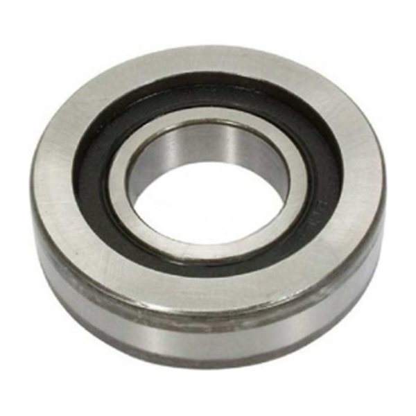

Parts › Mast & Upright › 1986-40145101.528

Available
Email for a quote
Yale 1986-40145101.528 Mast Roller
| OEM part number | 1986-40145101.528 |
| Fits | Yale |
| Models / notes | GPD20 |
| Category | Mast & Upright |
| Type | Aftermarket replacement |
Send us the quantity you need and we'll reply with pricing, usually within 24 hours. Not the exact part? We can source it. Send the part number or a photo.